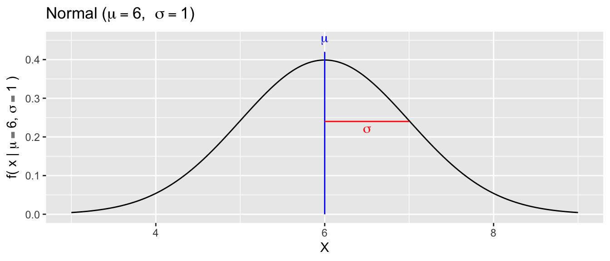
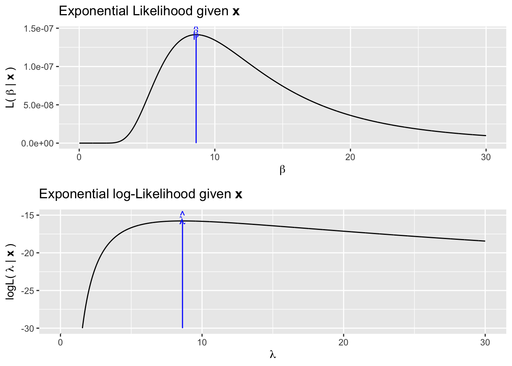
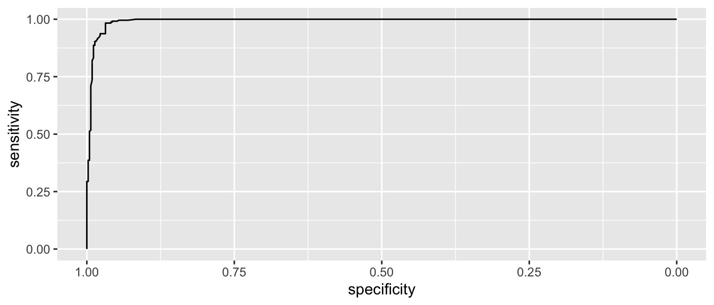
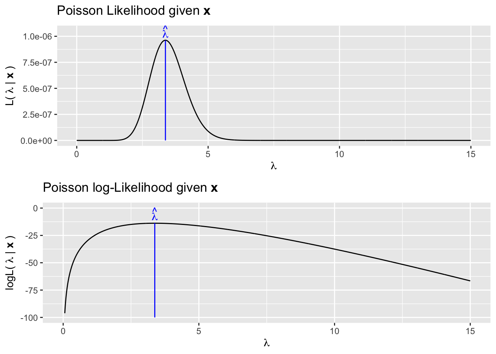
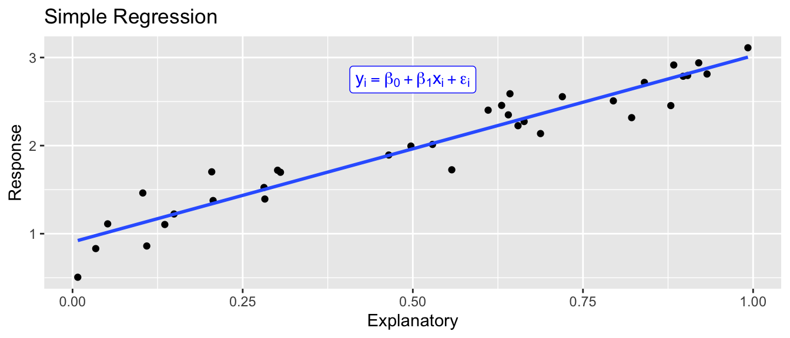
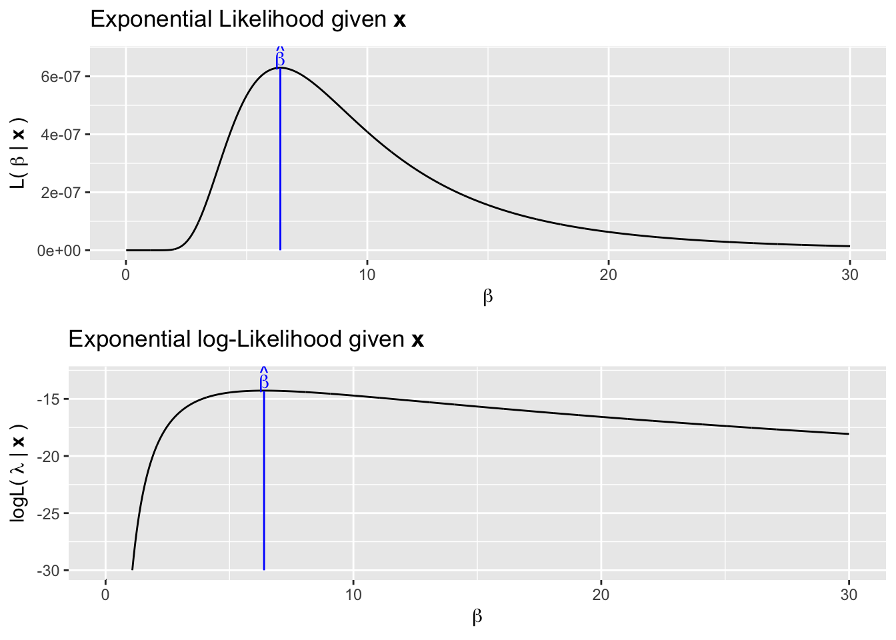
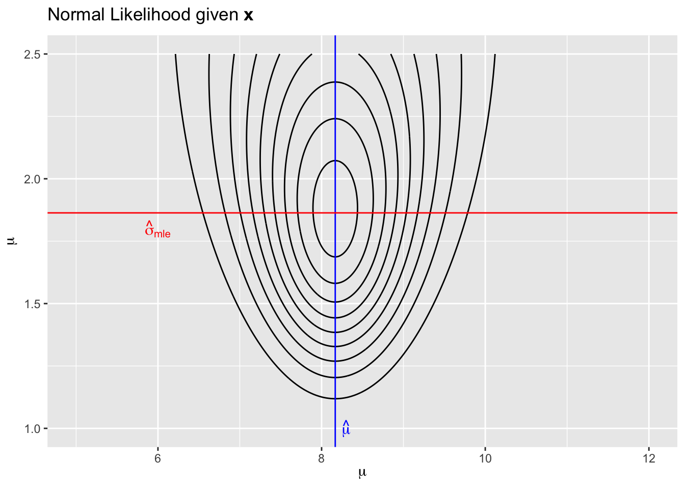

Chapter 13 Maximum Likelihood Principle
library(tidyverse) # dplyr, tidyr, ggplot2Learning Outcomes
- Explain how the probability mass/density function \(f(x|\theta)\) indicates what data regions are more probable.
- Explain how the likelihood function \(\mathcal{L}(\theta|x)\) is defined if we know the probability function.
- Explain how the likelihood function \(\mathcal{L}(\theta|x)\) is used to find the maximum likelihood estimate of \(\theta\).
- For a given sample of data drawn from a distribution, find the maximum likelihood estimate for the distribution parameters using R.
13.1 Introduction
The goal of statistical modeling is to take data that has some general trend along with some un-explainable variability, and say something intelligent about the trend. For example, the simple regression model
\[y_i = \beta_0 + \beta_1 x_i + \epsilon_i \;\;\;\;\;\; \textrm{where} \;\; \epsilon_i \stackrel{iid}{\sim} N(0, \sigma^2)\] 
There is a general increasing trend in the response (i.e. the \(\beta_0 + \beta_1 x_i\) term) and then some un-explainable noise (the \(\epsilon_i \stackrel{iid}{\sim} N(0, \sigma^2)\) part).
While it has been convenient to write the model in this form, it is also possible to write the simple regression model as \[y_i \stackrel{ind}{\sim} N(\, \beta_0 + \beta_1x_i,\; \sigma^2 \,)\]
This model contains three parameters \(\beta_0, \beta_1\), and \(\sigma\) but it certainly isn’t clear how to estimate these three values. In this chapter, we’ll develop a mechanism for taking observed data sampled from some distribution parameterized by some \(\beta\), \(\lambda\), \(\sigma\), or \(\theta\) and then estimating those parameters.
13.2 Distributions
Depending on what values the data can take on (integers, positive values) and the shape of the distribution of values, we might chose to model the data using one of several different distributions. Next we’ll quickly introduce the mathematical relationship between the parameter and probable data values of several distributions.
13.2.1 Poisson
The Poisson distribution is used to model the number of events that happen in some unit of time or space. This distribution is often used to model events that can only be positive integers. This distribution is parameterized by \(\lambda\), which represents the expected number of events that happen (as defined as the average over an infinitely large number of draws). Because \(\lambda\) represents the average number of events, the \(\lambda\) parameter must be greater than or equal to 0.
The function that defines the relationship between the parameter \(\lambda\) and what values are most probable is called the probability mass function when talking about discrete random variables and probability density functions in the continuous case. Either way, these functions are traditionally notated using \(f(x)\). \[f(x|\lambda) = \frac{e^{-\lambda} \lambda^x}{x!} \;\;\;\; \textrm{for}\;\; x \in \{0,1,2,\dots\}\]

The notation \(f(x|\lambda)\) read as “f given \(\lambda\)” and is used to denote that this is a function that describes what values of the data \(X\) are most probable and that the function depends on the parameter value. This is emphasizing that if we were to change the parameter value (to say \(\lambda = 10\)), then a different set of data values would be more probable. In the above example with \(\lambda = 3.5\), the most probable outcome is \(3\) but we aren’t surprised if we were to observe a value of \(x=1,2,\) or \(4\). However, from this graph, we see that \(x=10\) or \(x=15\) would be highly improbable.
13.2.2 Exponential
The Exponential distribution can be used to model events that take on a positive real value and the distribution of values has some skewness. We will parameterize this distribution using \(\beta\) as the mean of the distribution.
\[f(x|\beta) = \beta e^{\beta x} \;\;\;\; \textrm{for} \;\; x > 0\]

In this distribution, the region near zero is the most probable outcome, and larger observations are less probable.
13.2.3 Normal
The Normal distribution is extremely commonly used in statistics and can be used to modeled continuous variables and is parameterized by the center \(\mu\) and spread \(\sigma\) parameters.
\[f(x|\mu,\sigma) = \frac{1}{\sigma\sqrt{2\pi}} \exp \left[ -\frac{1}{2}\left(\frac{x-\mu}{\sigma}\right)^2 \right]\] where \(\exp [w] = e^w\) is just a notational convenience.

All of these distributions (and there are many, many more distributions commonly used) have some mathematical function that defines the how probable a region of response values is and that function depends on the parameters. Importantly \(X\) regions with the highest \(f(x|\theta)\) are the most probable data values.
There are many additional mathematical details that go into these density functions but the important aspect is that they tell us what data values are most probable given some parameter values \(\theta\).
13.3 Likelihood Function
As a researcher, I am not particularly interested in saying "If \(\mu=3\) and \(\sigma=2\) then I’m likely to observe approximately 95% of my data between \(-1\) and \(7\). Instead, I want to make an inference about what values for \(\mu\) and \(\sigma\) are the most concordant with observed data that I’ve collected. However, the probability density function \(f(x|\mu,\sigma)\) is still the mathematical link between the data and parameter and we will continue to use that function, but we’ll re-interpret which is known.
The Likelihood function is just the probability density (or mass) function \(f(x|\theta)\) re-interpreted to be a function where the data is the known quantity and we are looking to see what parameter values are consistent with the data.
13.3.1 Poisson
Suppose that we have observed a single data point drawn from a Poisson(\(\lambda\)) and we don’t know what \(\lambda\) is. We first write down the likelihood function
\[\begin{aligned} \mathcal{L}(\lambda|x) = f(x|\lambda) = \frac{e^{-\lambda} \lambda^x}{x!} \end{aligned}\]
If we have observed \(x=4\), then \(\mathcal{L}(\lambda|x=4)\) is the following function 
Our best estimate for \(\lambda\) is the value that maximizes \(\mathcal{L}(\lambda|x)\). We could do this two different ways. First we could mathematically solve by taking the derivative, setting it equal to zero, and then solving for lambda. Often this process is made mathematically simpler (and computationally more stable) by instead maximizing the log of the Likelihood function. This is equivalent because the log function is monotonically increasing and if \(a < b\) then \(\log(a) < \log(b)\). It is simpler because taking logs makes everything 1 operation simpler and reduces the need for using the chain rule while taking derivatives. We could also find the value of \(\lambda\) that maximizes the likelihood using numerical methods. Again because the log function makes everything nicer, in practice we’ll always maximize the log likelihood. Many optimization functions are designed around finding function minimums, so to use those, we’ll actually seek to minimize the negative log likelihood which is simply \(-1* \log \mathcal{L}()\).
Numerical solvers are convenient, but are only accurate to machine tolerance you specify. In this case where \(x=4\), the actual maximum likelihood value is \(\hat{\lambda}=4\).
x <- 4
neglogL <- function(param){
dpois(x, lambda=param) %>%
log() %>% # take the log
prod(-1) %>% # multiply by -1
return()
}
# Optimize function will find the maximum of the Likelihood function
# over the range of lambda values [0, 20]. By default, the optimize function
# finds the minimum, but has an option to find the maximum. Alternatively
# we could find the minimum of the -logL function.
optimize(neglogL, interval=c(0,20) )## $minimum
## [1] 3.999993
##
## $objective
## [1] 1.632876But what if we have multiple observations from this Poisson distribution? If the observations are independent, then the probability mass or probability density functions \(f(x_i|\theta)\) can just be multiplied together.
\[\begin{aligned} \mathcal{L}(\lambda|\textbf{x}) = \prod_{i=1}^{n}f(x_i|\lambda) = \prod_{i=1}^n\frac{e^{-\lambda} \lambda^x_i}{x_i!} \end{aligned}\]
So, suppose we have observed \(\textbf{x} = \{4,6,3,3,2,4,3,2\}\). We could maximize this function either using calculus methods or numerical methods this function and discover that the maximum occurs at \(\hat{\lambda} = \bar{x} = 3.375\).

If we are using the log-Likelihood, then the multiplication is equivalent to summing and we’ll define and subsequently optimize our log-Likelihood function like this:
x <- c(4,6,3,3,2,4,3,2)
neglogL <- function(param){
dpois(x, lambda=param) %>%
log() %>% sum() %>% prod(-1) %>%
return()
}
optimize(neglogL, interval=c(0,20) )## $minimum
## [1] 3.37499
##
## $objective
## [1] 13.8542613.3.2 Exponential Example
We next consider data sampled from the exponential distribution. Recall the exponential distribution can be parametrized by a single parameter, \(\beta\) and which is the expectation of the distribution and variance is \(\beta^2\). We might consider using as an estimator either the sample mean or the sample standard deviation. It turns out that the sample mean is the maximum likelihood estimator in this case. For a concrete example, suppose that we had observed \(\textbf{x}=\{15.6, 2.03, 9.12, 1.54, 3.69\}\)
The likelihood is \[\mathcal{L}(\beta | \textbf{x}) = \prod_{i=1}^n \beta e^{\beta x_i}\]
A bit of calculus will show that this is maximized at \(\hat{\beta} = \bar{x} = 6.39\). We can numerically see this following the same process as previously seen.
## [1] 6.396
x <- c(15.6, 2.03, 9.12, 1.54, 3.69)
neglogL <- function(param){
dexp(x, rate=1/param, log = TRUE) %>% # We defined beta as 1/rate
sum() %>%
prod(-1) %>%
return()
}
optimize(neglogL, interval=c(0,30) )## $minimum
## [1] 6.396004
##
## $objective
## [1] 14.2783613.3.3 Normal
We finally consider the case where we have observation coming from a distribution that has multiple parameters. The normal distribution is parameterized by a mean \(\mu\) and spread \(\sigma\). Suppose that we had observed \(x_i \stackrel{iid}{\sim} N(\mu, \sigma^2)\) and saw \(\textbf{x} = \{5, 8, 9, 7, 11, 9\}\).
As usual we can calculate the likelihood function
\[\mathcal{L}(\mu,\sigma | \textbf{x}) = \prod_{i=1}^n f(x_i|\mu,\sigma) = \prod_{i=1}^n \frac{1}{\sqrt{2\pi}\sigma} \exp \left[ -\frac{1}{2}\frac{(x_i-\mu)^2}{\sigma^2} \right]\]
Again using calculus, it can be shown that the maximum likelihood estimators in this model are \[\hat{\mu} = \bar{x} = 8.16666\] \[\hat{\sigma}_{mle} = \sqrt{ \frac{1}{n}\sum_{i=1}^n (x_i-\bar{x})^2 } = 1.8634\] which is somewhat unexpected because the typical estimator we use has a \(\frac{1}{n-1}\) multiplier.
x <- c(5, 8, 9, 7, 11, 9)
xbar <- mean(x)
s2 <- sum( (x - xbar)^2 / 6 )
s <- sqrt(s2)
x <- c(5, 8, 9, 7, 11, 9)
neglogL <- function(param){
dnorm(x, mean=param[1], sd=param[2]) %>%
log() %>% sum() %>% prod(-1) %>%
return()
}
# Bivariate optimization uses the optim function that only can search
# for a minimum. The first argument is an initial guess to start the algorithm.
# So long as the start point isn't totally insane, the numerical algorithm should
# be fine.
optim(c(5,2), neglogL ) ## $par
## [1] 8.166924 1.863391
##
## $value
## [1] 12.24802
##
## $counts
## function gradient
## 71 NA
##
## $convergence
## [1] 0
##
## $message
## NULL13.4 Discussion
How could the numerical maximization happen? Assume we have a 1-dimensional parameter space, we have a reasonable starting estimate, and the function to be maximized is continuous, smooth, and \(\ge 0\) for all \(x\). While knowing the derivative function \(f'(x)\) would allow us to be much more clever, lets think about how to do the maximization by just evaluating \(f(x)\) for different values of \(x\).
Convince yourself that if \(x_0\) is the value of \(x\) that maximizes \(f(x)\), then it is also the value that maximizes \(log( f( x ) )\). This will rest on the idea that \(log()\) is a strictly increasing function.
13.5 Exercises
- The \(\chi^2\) distribution is parameterized by its degrees of freedom parameter \(\nu\) which corresponds to the mean of the distribution (\(\nu\) must be \(>0\)). The density function \(f(x|\nu)\) can be accessed R using the
dchisq(x, df=nu).- For different values of \(\nu\), plot the distribution function of \(f(x|\nu)\). You might consider \(\nu = 5, 10,\) and \(20\). The valid range of \(x\) values is \([0,\infty)\) so select the
- Suppose that we’ve observed \(x = \{9,7,7,6,10,7,9)\). Calculate the sample mean and standard deviation.
- Graphically show that the maximum likelihood estimator of \(\nu\) is \(\bar{x} = 7.857\).
- Show that the maximum likelihood estimator of \(\nu\) is \(\bar{x} = 7.857\) using a numerical maximization function.
- The Beta distribution is often used when dealing with data that are proportions. It is parameterized by two parameters, usually called \(\alpha\) and \(\beta\) (both of which must be greater than zero). The mean of this distribution is by \[E[X]=\frac{\alpha}{\alpha+\beta}\]
while the spread of the distribution is inversely related to the magnitude of \(\alpha\) and \(\beta\). The density function \(f(x|\alpha,\beta)\) can be accessed in R using the
dbeta(x, alpha, beta)function.- For different values of \(\alpha\) and \(\beta\), plot the distribution function \(f(x|\alpha, \beta)\). You might consider keeping the ratio between \(\alpha\) and \(\beta\) constant and just increase their magnitude. The valid range of \(x\) values is \([0,1]\).
- Suppose that we’ve observed \(x = \{0.25, 0.42, 0.45, 0.50, 0.55\}\). Calculate the sample mean and standard deviation.
- Graphically show that the maximum likelihood estimators of \(\alpha\) and \(\beta\) are approximately \(9.5\) and \(12.5\).
- Show that the maximum likelihood estimators of \(\alpha\) and \(\beta\) are approximately \(9.5\) and \(12.5\).